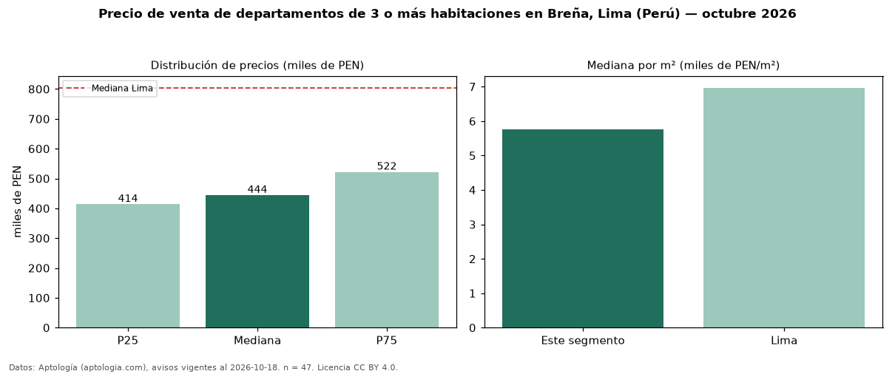

Precio de venta de departamentos de 3 o más habitaciones en Breña, Lima (Perú) — octubre 2026
En Breña, Lima (Perú), la mediana de precio de venta de departamentos de 3 o más habitaciones es PEN 444.000, según 47 avisos vigentes. Eso es 45 % por debajo de la mediana de Lima para departamentos de 3 o más habitaciones (PEN 804.184). Por metro cuadrado, la mediana es PEN 5.761/m² (n = 46 avisos con área), 17 % por debajo de Lima (PEN 6.967/m²). Son 61 % de los 77 avisos de departamentos en venta de la zona, cuya mediana general es PEN 421.040 (+5 %). El área mediana anunciada es 76 m². La mitad central de los avisos va de PEN 413.680 a PEN 521.921 (razón 1,3), una dispersión baja. Datos: Aptología (aptologia.com), CC BY 4.0 — https://www.aptologia.com/pe/venta/lima. Archivos: PDF, CSV con las cifras y gráfica PNG.

| Avisos únicos | 47 |
|---|---|
| Percentil 25 | COP 413.679 |
| Mediana | COP 444.000 |
| Percentil 75 | COP 521.921 |
| Mediana por m² | COP 5.761 |
Fuente: avisos vigentes de portales inmobiliarios recopilados por Aptología, deduplicados (mínimo 30 avisos únicos por celda). Precios pedidos, no cerrados. Fecha: 2026-10-18.